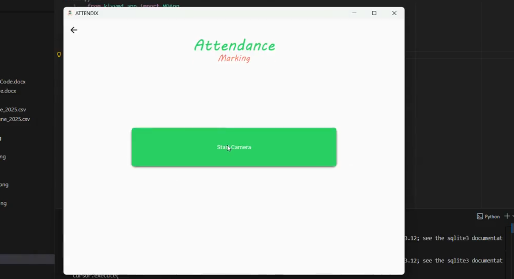
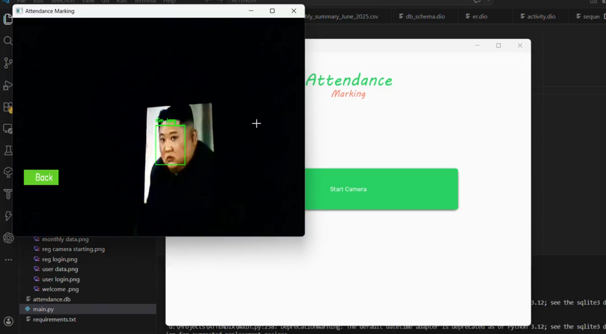
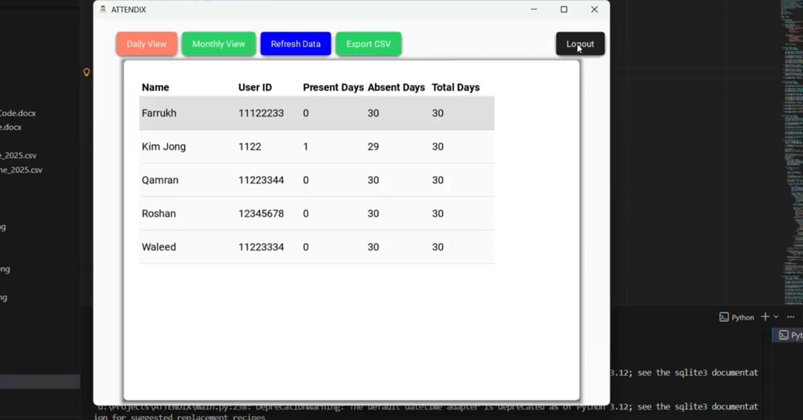

A smart AI-based attendance system that uses facial recognition to automatically mark attendance with high accuracy using OpenCV and machine learning models. It eliminates manual attendance and improves speed, security, and reliability.
Detects human faces in real time using OpenCV.
Matches faces with stored database using AI models.
Automatically marks entry and exit time of users.
Stores attendance records securely in SQLite/MySQL.


